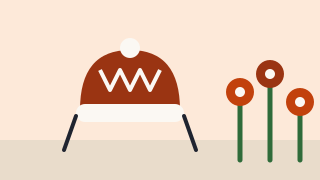

Bei Moni zuhause
Laos

Kurz gesagt: Ein kurzes Video zum Thema Laos in Deutschland. Moni hat der Veröffentlichung schriftlich zugestimmt.
Video von YouTube
Dieses Video liegt bei YouTube (Google). Erst wenn du auf „Video laden“ tippst, wird eine Verbindung zu YouTube hergestellt. YouTube kann dann Daten wie deine IP-Adresse verarbeiten. Vorher passiert nichts. Mehr dazu in der Datenschutzerklärung.
Zum Laden des Videos wird JavaScript benötigt.
Text zum Nachlesen
Korrigierte Fassung (Satzzeichen, Sprecher, Schreibfehler). Der Wortlaut bleibt, wie gesprochen. Was nicht zu verstehen ist, steht als [unverständlich]. Noch nicht von Moni gegengelesen. Sprecherinnen: Moni (Mutter) und Johanna (Kind).
Mutter: Hallo, hallo! Wie heißt du? Ich heiße … Wer ist das? Wer ist das?
Kind: Wo? Wer ist das?
Mutter: Das bist du. Doch, bin ich das? Ja. Was ist los bei dir? Was siehst du da?
Kind: Hallo, das bin ich.
Mutter: Ja, das bist du.
Kind: Wo ist andere Johanna? Ist das schwarz, Johanna?
Mutter: Wie schwarz, Johanna?
Kind: Andere Johanna.
Mutter: Johanna, schau mal, schöne Blumen.
Kind: Ja, das ist das ist … Mama, du musst halt nicht mach so.
Mutter: Das ist keine Foto, das ist Video. Ich mache jetzt Video für uns, ja. Was machst du da?
Kind: Ist das Johanna? Mhm. Schau mal, gebe ich dir ein Blumen. Blumen.
Mutter: Danke für die Blumen. Danke für die Blumen.
Kind: Auch diese. Oh, ist runtergefallen. Warte. Ui. Hier für dich.
Mutter: Danke. So, gehen wir jetzt raus?
Kind: Ja, gut, Mama. [unverständlich] Danke. Für deine Haare, deine Haare.
Mutter: Nein danke, ich mag keine Blume. Wir müssen jetzt rausgehen und [Name] abholen.
Kind: Aber Spielplatz. Ich will zum Spielplatz gehen.
Mutter: Johanna, draußen ist so kalt, aber wir können nicht so lange bleiben, okay? Wie denn? Wir können nicht so lange bleiben, weil draußen ist so kalt.
Kind: Warum?
Mutter: Warum, warum? Weil wir Winter haben.
Kind: Aber ich würde Spielplatz gehen.
Mutter: So kalt.
Kind: Aber du hast gesagt, wir können Spiel …
Mutter: Sag doch erstmal tschüss.
Kind: Tschüss, tschüss, Johanna.
Hilfe in Preungesheim
Wenn du neu im Stadtteil bist, findest du beim Quartiersmanagement Preungesheim (öffnet in neuem Tab) zum Beispiel Formularhilfe und ein Sprach-Café. Weitere Treffen stehen auf der Seite Termine.